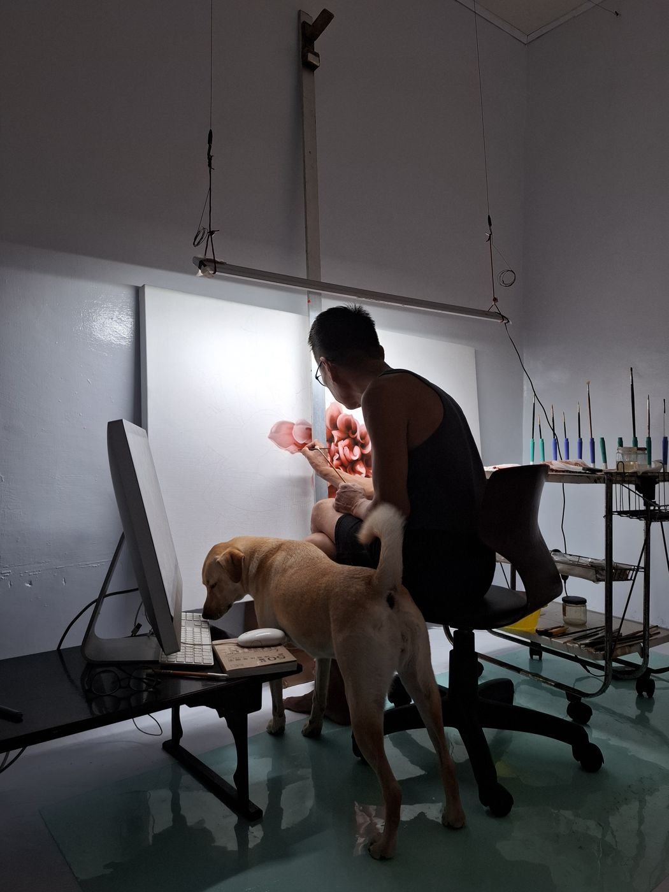

Biography
Artist CV
Zhi-Qing Liang 梁至青
He walks two paths at once — banana leaves, camphor trees, lilies and ancient trees on one side; line, dot, light and flow on the other. Radio Taiwan International describes him as one of very few artists in Taiwan working in abstraction and realism in parallel.
Zhi-Qing Liang was born in 1964 in Yuanli, Miaoli, Taiwan. He graduated from National Ta Chia Senior High School in 1982, and now lives and paints in Miaoli.
He worked for years in stage design and construction for theatre and entertainment in Taipei before returning to Yuanli to paint full-time. His book Existence (存有) was published by Preaudience Press in 2010.



Selected solo exhibitions
| 2024 | Abiogenesis (偶發) — watercolour exhibition and talk | Yuanli, Miaoli |
| 2019 | Guang Bian Art Exhibition (光變藝術展) | Hotel Liyaou, Chiayi |
| 2018 | Guang Bian (光變) | Shuise Art Studio, Tainan |
| 2017 | Summer South Wind (夏日南風) | YAMI ART SPACE, Taichung |
| 2012 | Millennial Splendour (千年之華), Art Taipei, Fei Gallery | Taipei |
| 2012 | Flower — Form and Colour (花－形色), Fei Gallery | Taipei |
| 2010 | Flowing (流動) | Ke-Yuan Gallery, Taichung |
| 2009 | Take a Walk (隨．行) | Jin-Zhi Gallery, Yuanli, Miaoli |
| 1999 | State of Heart 99 (心象 99) | Ke-Yuan Gallery, Taichung |
| 1998 | Interior Scene 98 (內景 98) | Art Center of Yuanli, Miaoli |
| 1998 | Interior Scene 98 (內景 98) | Eslite Gallery, Taipei |
| 1995 | Psyche & Eros (情慾思維) | State Exhibition Space, Taichung |
Selected group exhibitions
| 2010 | Landscape in Transition | Shanghai, China |
| 2006 | Modern Painters | Arthis Fine Art, Taichung |
| 2006 | Taipei Art International Fair | Taipei World Trade Center, Taipei |
| 2006 | Leaves of Grass — Modern Art on Paper | Ke-Yuan Gallery, Taichung |
| 2005 | Moment and Memory | National Cheng Kung University Art Center, Tainan |
| 2004 | Psyche & Eros | National Cheng Kung University Art Center, Tainan |
| 2001 | Modern Realism Art | Ke-Yuan Gallery, Taichung |
| 2001 | The Aura on Millennium — Abstract, Nature Tetralogy | Hong-Gah Museum, Taipei |
| 1996 | New Talent Exhibition — Psyche & Eros | Eslite Gallery, Taipei |
Books and auctions
| 2020 | Poly Auction Hong Kong, Modern and Contemporary Art: Magenta Lily, Take a Walk No.36 |
| 2010 | Existence (存有), Preaudience Press |
Talks are listed on the Chinese page.